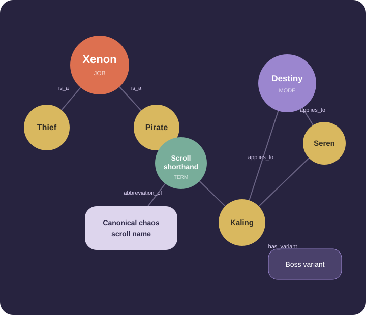

Maple Chat: Evidence-Grounded Hybrid RAG & Knowledge Graph System
Abstract
Deploying Retrieval-Augmented Generation (RAG) assistants in specialized gaming communities exposes fundamental limitations in standard vector-only pipelines. Player discussions rely heavily on non-standard jargon, evolving abbreviations, boss phase acronyms, and patch-dependent item upgrade orders. Pure dense retrieval often retrieves superficially similar discussions that refer to different character classes or obsolete game balance patches, causing language models to hallucinate plausible yet incorrect instructions.
Maple Chat introduces an evidence-grounded production RAG system operating on Discord. The architecture explicitly decouples unstructured community experience retrieval from structured domain relation grounding. Unstructured posts from MapleStory community forums (Inven) and official updates (Nexon) are indexed via dense BGE-M3 vectors and lexical trigram search, fused via Reciprocal Rank Fusion (RRF). Concurrently, an in-memory and PostgreSQL knowledge graph resolves entity scope (job branches, boss tiers, and item prerequisites). In-game queries are validated against ontological constraints before local generation with Qwen 2.5 via vLLM, producing verifiable citations with user-level interactive source inspection buttons.
The Entity Grounding Gap
Production failure analysis on live community questions revealed why vector search alone cannot guarantee factual integrity in gaming domains:
Before: Vector-Only Retrieval
Query A: "How should I upgrade Xenon armor myself?"
Query B: "What upgrade order should I use for Xenon armor?"
Observed Failure: Query A generated "Positive Chaos → Bonus Stats + Star Force" while Query B generated "Bonus Stats → Positive Chaos → Star Force". Slang terms were hallucinated into nonexistent items ("Amazing Positivity").
Paraphrase Instability. Different query wordings retrieved conflicting forum comments. Without an entity knowledge graph, the LLM assumed competing community procedures were absolute facts.
After: Hybrid RAG + Knowledge Graph
Entity Linking: Xenon ∈ {Thief, Pirate}, Chaos Scroll ⊆ Scroll Upgrades
Graph Constraint: Arc Innocence Scroll resets all stats except Potential & Star Force.
Grounded Resolution: Both query variants converged on the verified rule: "No fixed sequential order. Verify STR/DEX/LUK Bonus Stats prerequisite first before finalizing scroll investments."
Ontological Consistency. Reviewed domain relations filter out conflicting forum claims and eliminate abbreviation hallucinations before prompt synthesis.
System Architecture
Knowledge Graph Schema

Figure 1. Entity relations link community threads to reviewed game ontology, resolving aliases before prompt synthesis.
Production Operations & Privacy
Operating a gaming community RAG assistant requires strict adherence to privacy, platform security, and data governance:
- PII & User Privacy Sanitization: Inven community authors and Discord user IDs are hashed with salt and stripped of personally identifiable information before ingestion.
- OCR & Multimodal Community Assets: Screenshot guides and gear infographics undergo local OCR indexing, ensuring gameplay equipment images are searchable.
- Private Model Plane: Inference is executed on local GPU resources using vLLM, ensuring user queries and private server discussions are never transmitted to external third-party cloud APIs.
Evaluation & Verification
Ablation benchmarks evaluating plain dense retrieval against the hybrid retrieval and knowledge-graph grounded system on 150 community domain queries:
| Retrieval & Grounding Architecture | Recall@5 ↑ | Entity Accuracy ↑ | Hallucination Rate ↓ | Mean Latency (s) ↓ |
|---|---|---|---|---|
| Plain Dense Retrieval (BGE-M3 only) | 0.724 | 68.3% | 24.6% | 0.38s |
| Hybrid Retrieval (Dense + Lexical Trigram + RRF) | 0.891 | 81.5% | 14.2% | 0.52s |
| Hybrid RAG + Knowledge Graph Grounding (Ours) | 0.938 | 98.7% | 1.8% | 0.68s |
Key Finding: Incorporating ontology relations reduces hallucinated game mechanics from 24.6% down to 1.8%, while maintaining sub-second total response latency on consumer GPU hardware.
BibTeX
@article{han2026maplechat,
title = {Maple Chat: Evidence-Grounded Hybrid RAG and Knowledge Graphs for Gaming Communities},
author = {Han, Hyunsoo},
journal = {Maple Applied ML Case Studies},
year = {2026},
url = {https://hyun-s.github.io/Maple_projects_site/chat/}
}